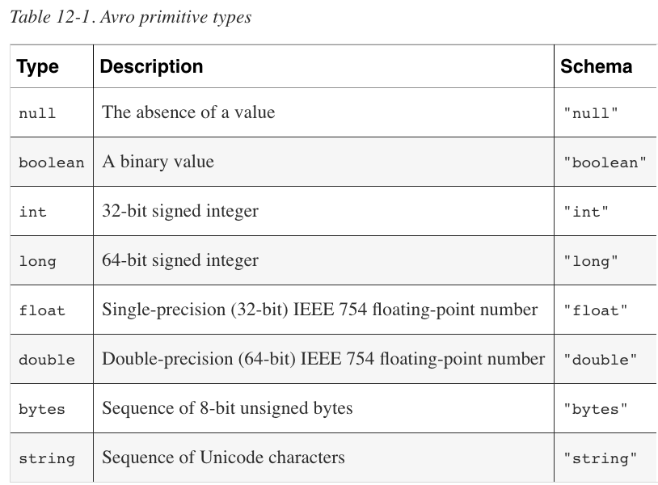
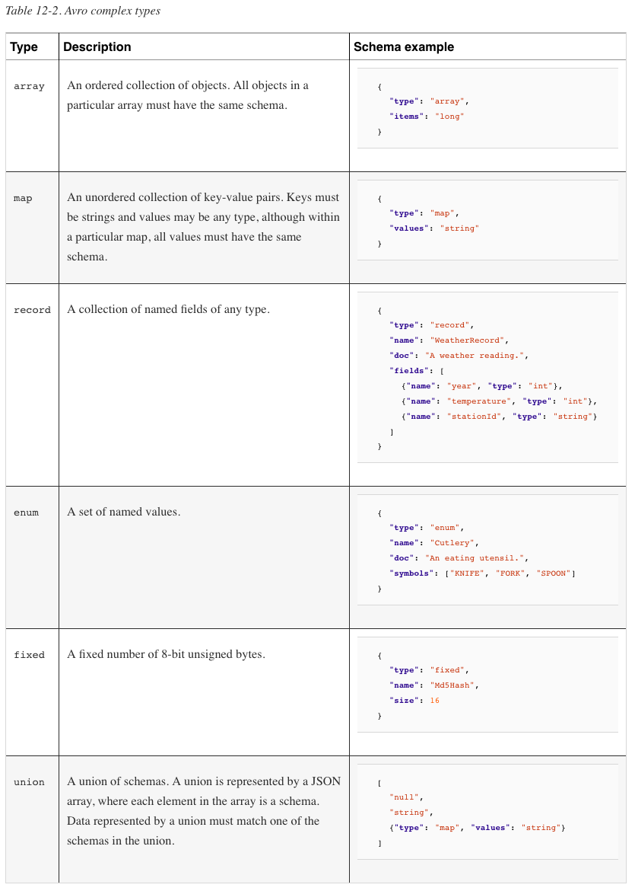
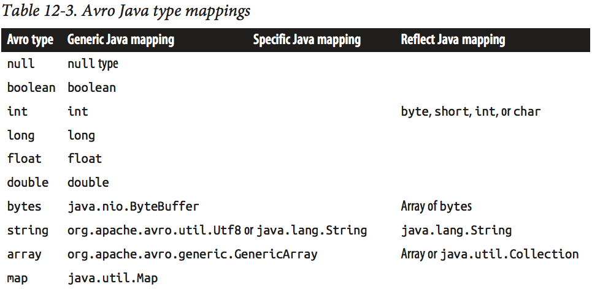
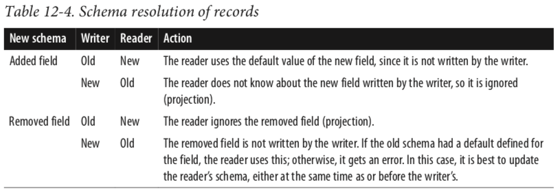

Introduction to Apache Avro
What's Apache Avro?
Apache Avro is a language-neutral data serialization system. The project was created by Doug Cutting (the creator of Hadoop) to address the major downside of Hadoop Writables: lack of language portability.
Why a new data serialization system?
Avro has a set of features that, taken together, differentiate it from other systems such as Apache Thrift or Google’s Protocol Buffers. Like in these systems and others, Avro data is described using a language-independent schema. However, unlike in some other systems, code generation is optional in Avro, which means you can read and write data that conforms to a given schema even if your code has not seen that particular schema before. To achieve this, Avro assumes that the schema is always present—at both read and write time—which makes for a very compact encoding, since encoded values do not need to be tagged with a field identifier.
With code-generation usually means that before compiling your Java application, you have an Avro schema available. You, as a developer, will use an Avro compiler to generate a class for each record in the schema and you use these classes in your application.
In the referenced link, the author does this: java -jar avro-tools-1.7.5.jar compile schema student.avsc, and then uses the student_marks class directly.
In this case, each instance of the class student_marks inherits from SpecificRecord, with custom methods for accessing the data inside (such as getStudentId() to fetch the student_id field).
Without code-generation usually means that your application doesn't have any specific necessary schema (for example, it can treat different kinds of data).
In this case, there's no student class generated, but you can still read Avro records in an Avro container. You won't have instances of student, but instances of GenericRecord. There won't be any helpful methods like getStudentId(), but you can use methods get("student_marks") or get(0).
Schemas
Avro schemas are usually written in JSON, and data is usually encoded using a binary format, but there are other options, too. There is a higher-level language called Avro IDL for writing schemas in a C-like language that is more familiar to developers. There is also a JSON-based data encoder, which, being human readable, is useful for prototyping and debugging Avro data.
The Avro specification precisely defines the binary format that all implementations must support. It also specifies many of the other features of Avro that implementations should support. One area that the specification does not rule on, however, is APIs: implementations have complete latitude in the APIs they expose for working with Avro data, since each one is necessarily language specific.
Schema resolution
Within certain carefully defined constraints, the schema used to read data need not be identical to the schema that was used to write the data. This is the mechanism by which Avro supports schema evolution. For example, a new, optional field may be added to a record by declaring it in the schema used to read the old data. New and old clients alike will be able to read the old data, while new clients can write new data that uses the new field. Conversely, if an old client sees newly encoded data, it will gracefully ignore the new field and carry on processing as it would have done with old data.
Avro specifies an object container format for sequences of objects, similar to Hadoop’s sequence file. An Avro datafile has a metadata section where the schema is stored, which makes the file self-describing. Avro datafiles support compression and are splittable, which is crucial for a MapReduce data input format. In fact, support goes beyond MapReduce: all of the data processing frameworks in this book (Pig, Hive, Crunch, Spark) can read and write Avro datafiles.
Avro Data Types and Schemas


Each Avro language API has a representation for each Avro type that is specific to the language. For example, Avro’s double type is represented in C, C++, and Java by a double, in Python by a float, and in Ruby by a Float.
Generic Mapping
All languages support a dynamic mapping, which can be used even when the schema is not known ahead of runtime.
Specific Mapping
The Java and C++ implementations can generate code to represent the data for an Avro schema. It is an optimization that is useful when you have a copy of the schema before you read or write data. Generated classes also provide a more domain-oriented API for user code than Generic ones.
Reflect Mapping (Java specific one)
Maps Avro types onto preexisting Java types using reflection. It is slower than the Generic and Specific mappings but can be a convenient way of defining a type, since Avro can infer a schema automatically.


Avro string can be represented by either Java String or the Avro Utf8 Java type. The reason to use Utf8 is efficiency: because it is mutable, a single Utf8 instance may be reused for reading or writing a series of values. Also, Java String decodes UTF-8 at object construction time, whereas Avro Utf8 does it lazily, which can increase performance in some cases. Utf8 implements Java’s java.lang.CharSequence interface, which allows some interoperability with Java libraries. In other cases, it may be necessary to convert Utf8 instances to String objects by calling its toString() method. Utf8 is the default for Generic and Specific, but it’s possible to use String for a particular mapping. There are a couple of ways to achieve this. The first is to set the avro.java.string property in the schema to String:
json { "type": "string", "avro.java.string": "String" }
In-Memory Serialization and Deserialization
@Test
public void testEncoderDecoder() throws IOException {
System.out.println("Encode/Decode test");
Schema.Parser parser = new Schema.Parser();
Schema schema = parser.parse(getClass().getResourceAsStream("/avro/user.avsc"));
try (ByteArrayOutputStream outputStream = new ByteArrayOutputStream()) {
DatumWriter<GenericRecord> writer = new GenericDatumWriter<>(schema);
GenericRecord user1 = new GenericData.Record(schema);
user1.put("name", "Armando");
user1.put("favoriteNumber", 11);
user1.put("favoriteColor", "PINK");
GenericRecord user2 = new GenericData.Record(schema);
user2.put("name", "Rosana");
user2.put("favoriteNumber", 14);
user2.put("favoriteColor", "GREY");
Encoder encoder = EncoderFactory.get().jsonEncoder(schema, outputStream);
writer.write(user1, encoder);
writer.write(user2, encoder);
encoder.flush();
final String jsonRecords = outputStream.toString();
System.out.println("Encoded avro => json:\n" + jsonRecords);
DatumReader<GenericRecord> datumReader = new GenericDatumReader<>(schema);
Decoder decoder = DecoderFactory.get().jsonDecoder(schema, jsonRecords);
GenericRecord parsedUser1 = datumReader.read(null, decoder);
GenericRecord parsedUser2 = datumReader.read(null, decoder);
// GenericRecord parsedNull = datumReader.read(null, decoder); // <= Exception!
System.out.println();
System.out.println("Decoded json => avro:");
System.out.println(parsedUser1);
System.out.println(parsedUser2);
} catch (IOException ioe) {
ioe.printStackTrace();
}
}
Avro Datafiles
Avro’s object container file format is for storing sequences of Avro objects. A datafile has a header containing metadata, including the Avro schema and a sync marker, followed by a series of (optionally compressed) blocks containing the serialized Avro objects. Blocks are separated by a sync marker that is unique to the file (the marker for a particular file is found in the header) and that permits rapid resynchronization with a block boundary after seeking to an arbitrary point in the file, such as an HDFS block boundary. Thus, Avro datafiles are splittable.
Schema Resolution
We can choose to use a different schema for reading the data back (the reader’s schema) from the one we used to write it (the writer’s schema). This is a powerful tool because it enables schema evolution. To illustrate, consider a new schema for string pairs with an added description field:
{
"type": "record",
"name": "StringPair",
"doc": "A pair of strings with an added field.",
"fields": [
{"name": "left", "type": "string"},
{"name": "right", "type": "string"},
{"name": "description", "type": "string", "default": ""}
]
}
We can use this schema to read the data we serialized earlier because, crucially, we have given the description field a default value (the empty string), which Avro will use when there is no such field defined in the records it is reading. Had we omitted the default attribute, we would get an error when trying to read the old data.
To make the default value
nullrather than the empty string, we would instead define thedescriptionfield using a union with thenullAvro type:
json {"name": "description", "type": ["null", "string"], "default": null}
When the reader’s schema is different from the writer’s, we use the constructor for GenericDatumReader that takes two schema objects, the writer’s and the reader’s, in that order:
DatumReader<GenericRecord> reader = new GenericDatumReader<GenericRecord>(schema, newSchema);
Decoder decoder = DecoderFactory.get().binaryDecoder(out.toByteArray(), null);
GenericRecord result = reader.read(null, decoder);
assertThat(result.get("left").toString(), is("L"));
assertThat(result.get("right").toString(), is("R"));
assertThat(result.get("description").toString(), is(""));
For datafiles, which have the writer’s schema stored in the metadata, we only need to specify the reader’s schema explicitly, which we can do by passing null for the writer’s schema:
DatumReader<GenericRecord> reader = new GenericDatumReader<GenericRecord>(null, newSchema);
Projection or sub-schema
Another common use of a different reader’s schema is to drop fields in a record, an operation called projection. This is useful when you have records with a large number of fields and you want to read only some of them. For example, this schema can be used to get only the right field of a StringPair:
{
"type": "record",
"name": "StringPair",
"doc": "A pair of strings with an added field.",
"fields": [
{"name": "right", "type": "string"}
]
}
Rules of resolution
The rules for schema resolution have a direct bearing on how schemas may evolve from one version to the next, and are spelled out in the Avro specification for all Avro types.

Another useful technique for evolving Avro schemas is the use of name aliases. Aliases allow you to use different names in the schema used to read the Avro data than in the schema originally used to write the data. For example, the following reader’s schema can be used to read StringPair data with the new field names first and second instead of left and right(which are what it was written with):
{
"type": "record",
"name": "StringPair",
"doc": "A pair of strings with an added field.",
"fields": [
{"name": "first", "type": "string", "aliases": ["left"]},
{"name": "second", "type": "string", "aliases": ["right"]}
]
}
Note that the aliases are used to translate (at read time) the writer’s schema into the reader’s, but the alias names are not available to the reader. In this example, the reader cannot use the field names left and right, because they have already been translated to first and second.